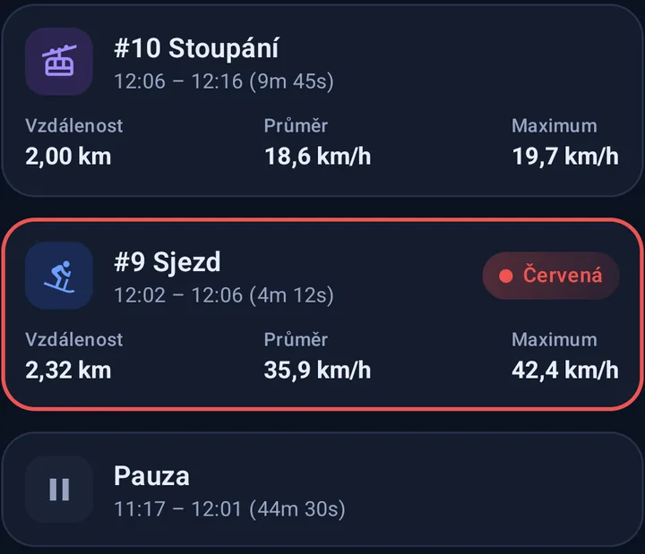
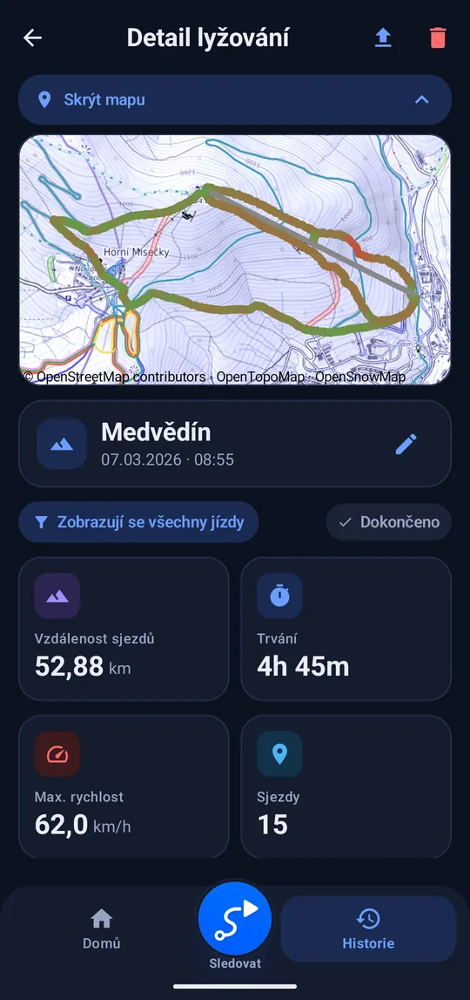
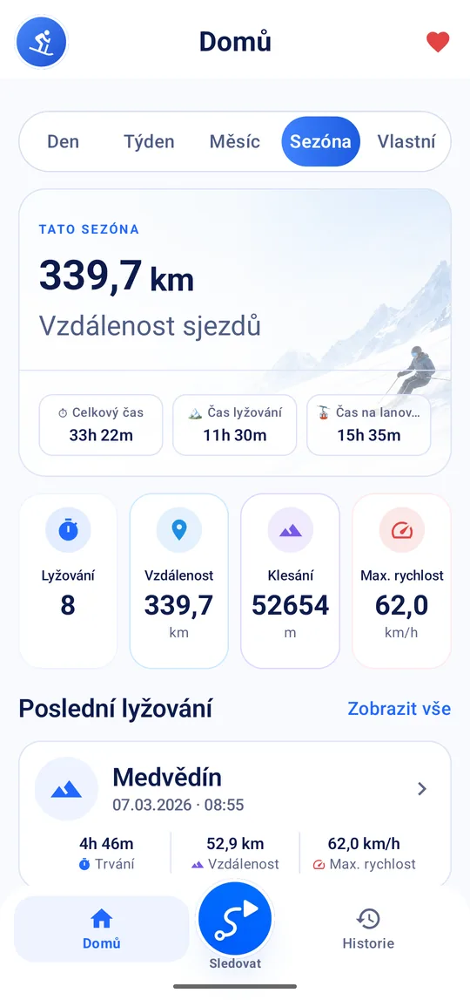
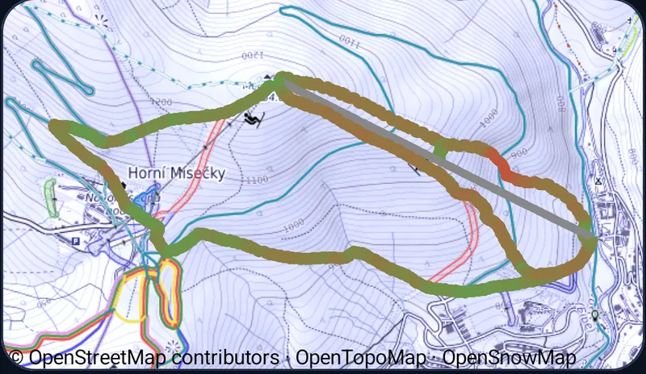
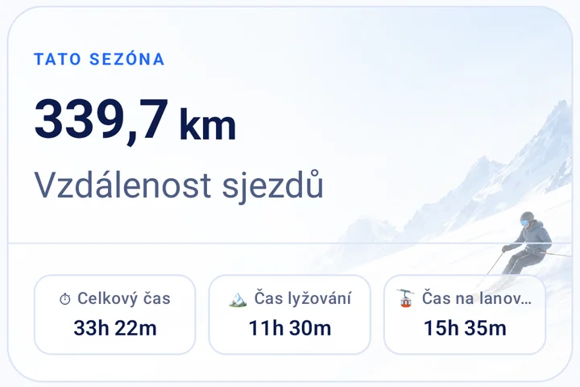
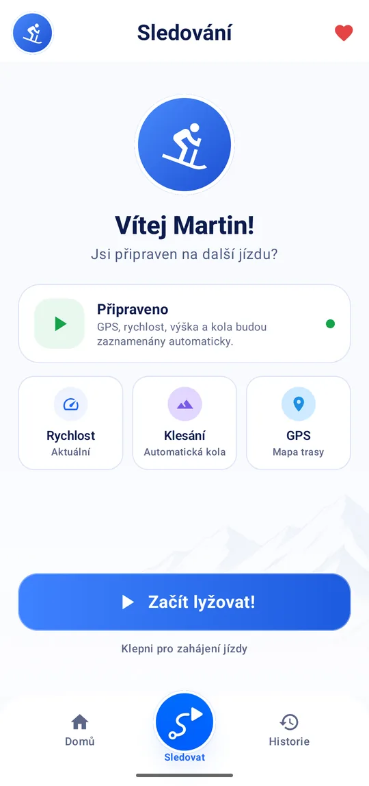
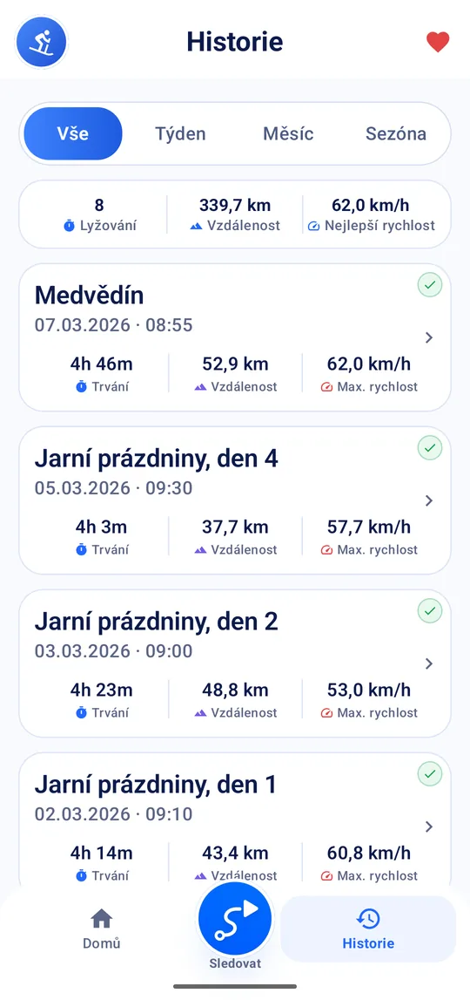

Sjezdy a vleky rozpozná sám
Podle rychlosti a výšky pozná, kdy jedeš dolů a kdy vlekem. Na oběd si dáš pauzu jedním klepnutím a sjezdům můžeš dát barvu sjezdovky.

Ve vývoji. Beta v zimě 2026/27.
Zapneš ho u první lanovky. Večer máš každý sjezd, vlek, rychlost i trasu na mapě.


Žádné ruční přepínání mezi sjezdem a vlekem. Aplikace běží na pozadí a z čísel sama poskládá tvůj den.
Podle rychlosti a výšky pozná, kdy jedeš dolů a kdy vlekem. Na oběd si dáš pauzu jedním klepnutím a sjezdům můžeš dát barvu sjezdovky.

Sjezdovky a vleky z OpenStreetMap. Barva čáry ukazuje, kde jsi jel nejrychleji.

Aktuální a maximální rychlost, vzdálenost a převýšení už během jízdy.
Body se ukládají průběžně. Když telefon v mrazu vypne, rozjetý záznam po zapnutí obnovíš.
Kolik jsi letos najezdil, kolik času strávil na svahu a kolik na lanovce.

Katalog lyžařských středisek je přímo v aplikaci. Oblíbené máš po ruce i na kopci bez signálu.

Ráno u první lanovky. Pak telefon zamkni a schovej do kapsy.
SkiLog na pozadí sleduje polohu, rychlost a nadmořskou výšku a sám rozlišuje sjezdy a vleky.
Mapa, jednotlivé jízdy, rychlost a převýšení. Den můžeš přejmenovat nebo uložit jako GPX.
Obrazovky z vývojové verze. Do vydání se vzhled ještě dolaďuje.

SkiLog nemá server, kam by posílal tvoje jízdy. Poloha a historie zůstávají v telefonu. Odesílá jen anonymní hlášení o pádu aplikace, a to si můžeš vypnout.
Roadmapa
Lyžařský deník, který nic nechce. Ráno ho zapneš a o zbytek dne se postará sám.
Aplikace už zaznamená celý den. Ladíme přesnost rozpoznání sjezdů a vleků, výdrž baterie a nový vzhled.
SkiLog dostanou první lyžaři. Testujeme na různých telefonech, v mrazu i se slabým signálem.
Veřejná verze na Google Play v češtině, slovenštině a angličtině.
V zimě hledáme lyžaře a snowboardisty s Androidem, kteří SkiLog otestují na svahu. Na Google Play aplikace půjde po betě.